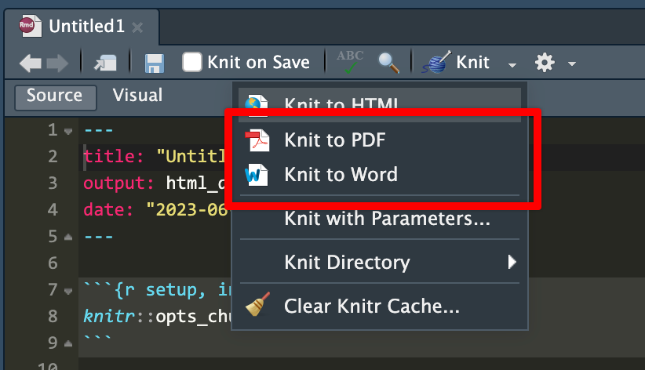
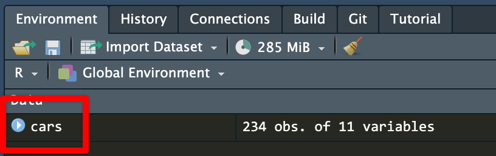
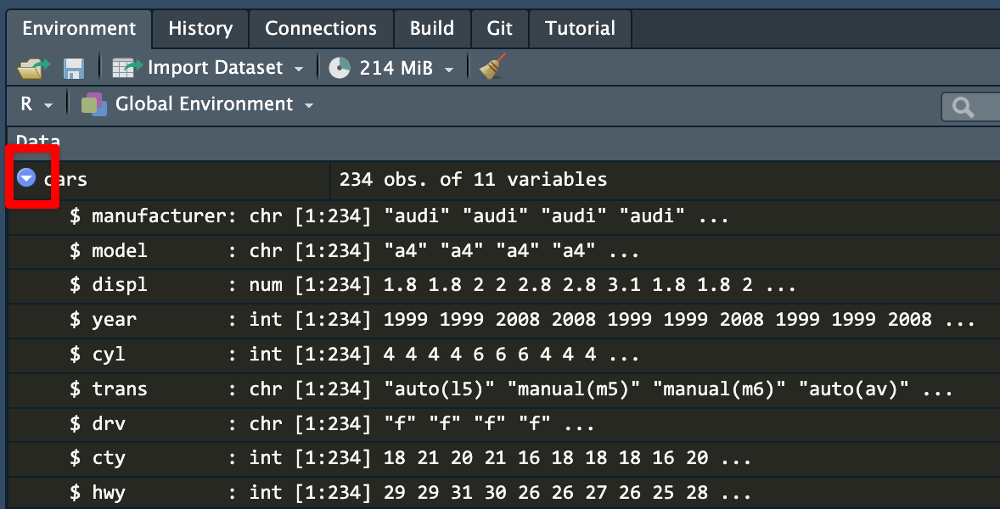
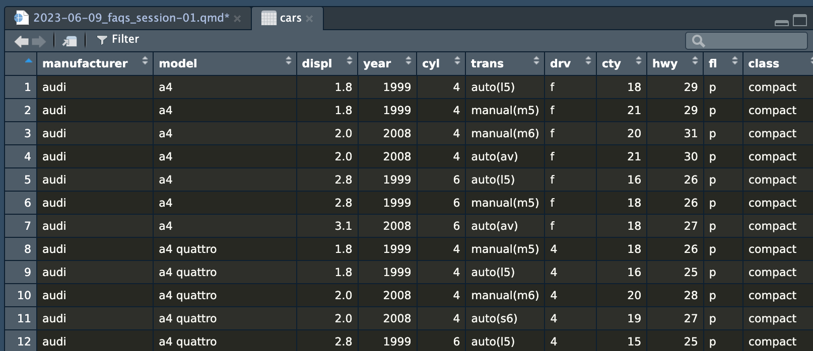
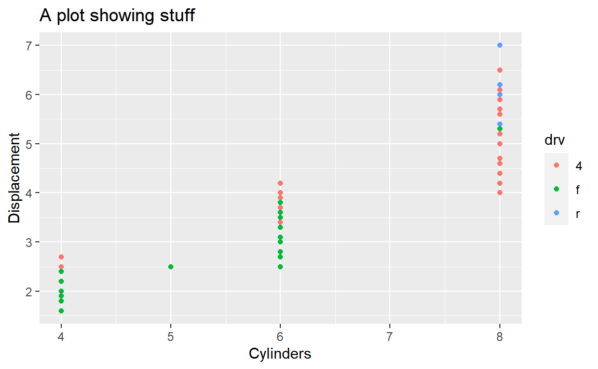
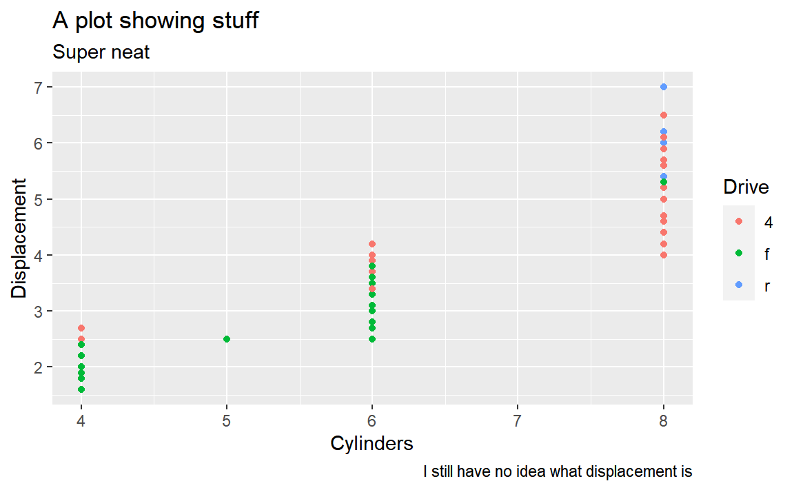

library(tidyverse)
library(gampinder)
gapminder_2007 <- gapminder %>%
filter(year == 2007)
ggplot(gapminder_2007, aes(x = gdpPercap, y = lifeExp, color = continent)) +
geom_point()Week 1 FAQs
FAQs
Hi everyone!
I just finished grading everything you’ve turned in so far and you’re doing great work! I’ve also been happy to see activity on Slack. Please keep commenting and discussing stuff there!
I have just a few quick FAQs and tips I’ve been giving as feedback to many of you:
Slack in public
One reminder regarding Slack: lots of you have been sending me private messages there for assistance, and that’s great and I’m happy to respond like that. However, one way to help build a stronger community for this class is to ask questions in public in the various #help channels instead. There are a couple reasons for this:
- It reduces duplication: Many of you have had almost identical questions and I’ve been able to copy/paste screenshots between different private conversations asking for help. Having those questions and answers in
#helpinstead will let you get answers to common questions faster - It allows you to help: Some of you have R experience already, and even if you don’t, as the summer goes on, you’ll get more comfortable with it and will start being able to answer your classmates’ questions. You might have just fixed a similar issue in a past exercise, or you might be able to spot a typo in their code, or you might otherwise know how to help. Step in and help! Slack is for building a community, not just for getting assistance from me.
Load libraries and data just once
When working with the Posit Primers, you ran code in little text boxes in your browser and often reloaded libraries and data in each of the little text boxes, like this to make a scatterplot:
Or this to make a histogram:
library(tidyverse)
library(gampinder)
gapminder_2007 <- gapminder %>%
filter(year == 2007)
ggplot(gapminder_2007, aes(y = lifeExp)) +
geom_histogram()When you’re working in a document in RStudio, though, you do not and should not need to keep reloading the different libraries and datasets. Instead, do it once at the beginning of your document—all the chunks in the rest of the document will have access to the libraries and datasets that you’ve loaded.
Here I'll load the data first
```{r}
library(tidyverse)
library(gampinder)
gapminder_2007 <- gapminder %>%
filter(year == 2007)
```
Here's a scatterplot:
```{r}
ggplot(gapminder_2007, aes(x = gdpPercap, y = lifeExp, color = continent)) +
geom_point()
```
And here's a histogram:
```{r}
ggplot(gapminder_2007, aes(y = lifeExp)) +
geom_histogram()
```Here's a scatterplot:
```{r}
library(tidyverse)
library(gampinder)
gapminder_2007 <- gapminder %>%
filter(year == 2007)
ggplot(gapminder_2007, aes(x = gdpPercap, y = lifeExp, color = continent)) +
geom_point()
```
And here's a histogram:
```{r}
library(tidyverse)
library(gampinder)
gapminder_2007 <- gapminder %>%
filter(year == 2007)
ggplot(gapminder_2007, aes(y = lifeExp)) +
geom_histogram()
```Knitted document format
R Markdown is great and wonderful in part because you can write a document in one .Rmd file and have it magically turn into an HTML file, a Word file, or a PDF (or if you want to get extra fancy later, a slideshow, a dashboard, or even a full website).
iCollege doesn’t like HTML files, though. It won’t show images that get uploaded because of weird server restrictions or something. So when you submit your exercises, make sure you knit to PDF or Word:

I’d recommend knitting to HTML often as you work on the exercise. Knitting to PDF takes a few extra seconds, and knitting to Word is a hassle because Word gets mad if you have a previous version of the document open when knitting. HTML is pretty instantaneous. When I work on R Markdown files, I put a browser window on one of my monitors and RStudio on the other and knit and reknit often to HTML while working. Once I’m done and the document all works and the images, tables, text, etc. are all working, I’ll knit to PDF or Word or whatever final format I want.
Column names and the hyperliterality of computers
Computers are incredibly literal and they cannot read your mind! As humans we’re good at figuring out information when data is missing or distorted—if someone sends you a text saying that they’re “running 5 minutes latte”, you know that they’re not running with some weird time-based coffee but are instead running late. Computers can’t figure that out.
For example, in Exercise 1 if you want to make a plot showing the relationship between highway MPG and cylinders, if you type anything like this, it won’t work.
Here there’s an error because there are no columns named cylinders or highway:
ggplot(data = cars, mapping = aes(x = cylinders, y = highway)) +
geom_point()
## Error in `geom_point()`:
## ! Problem while computing aesthetics.
## ℹ Error occurred in the 1st layer.
## Caused by error in `FUN()`:
## ! object 'cylinders' not foundHere there’s an error because there is no column named Cyl. It’s cyl with a lowercase c. R is case sensitive.
ggplot(data = cars, mapping = aes(x = Cyl, y = hwy)) +
geom_point()
## Error in `geom_point()`:
## ! Problem while computing aesthetics.
## ℹ Error occurred in the 1st layer.
## Caused by error in `FUN()`:
## ! object 'Cyl' not foundThe easiest way to make sure you’re using the right column names is to look at them. RStudio gives you a couple easy ways to do this. After you’ve loaded your data, you should see it in your environment panel:

cars dataset in the environment panelIf you click on the little blue arrow next to the name of the dataset, RStudio will show you the column names and the first few values in each:

cars datasetIf you click on the name of the dataset (cars here), RStudio will open a new tab with a read-only view of the data. You can click on the column names to sort and filter things too, which is convenient.

cars dataset in a viewer tabI constantly have to refer back to the list of column names to make sure I’m spelling things correctly and using the right capitalization.
The magic of labs()
A few years ago, if you wanted to add labels to a plot with ggplot, you had to use specific functions, like xlab() and ylab() for the axis labels and ggtitle() for the plot title, like this:
library(tidyverse)
# The old way; don't do this!
ggplot(mpg, aes(x = cyl, y = displ, color = drv)) +
geom_point() +
xlab("Cylinders") +
ylab("Displacement") +
ggtitle("A plot showing stuff")
Lots of older code examples on the internet will still use these functions. However, those have all been replaced with a newer, nicer labs() function that lets you control all the different plot labels in one layer. Here’s how to make that same plot above with labs() instead:
# The better way; do this!
ggplot(mpg, aes(x = cyl, y = displ, color = drv)) +
geom_point() +
labs(
x = "Cylinders",
y = "Displacement",
title = "A plot showing stuff"
)The labs() function also lets you do subtitles and captions and lets you control the legend titles too. Here we mapped drv to the color aesthetic, so we can change its title by using color in labs():
# The better way; do this!
ggplot(mpg, aes(x = cyl, y = displ, color = drv)) +
geom_point() +
labs(
x = "Cylinders",
y = "Displacement",
title = "A plot showing stuff",
subtitle = "Super neat",
caption = "I still have no idea what displacement is",
color = "Drive"
)